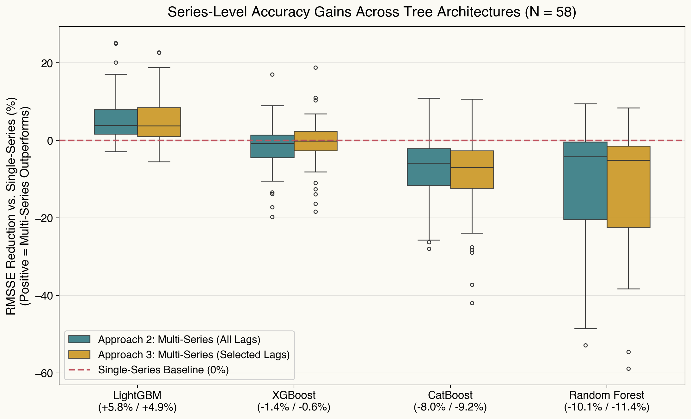
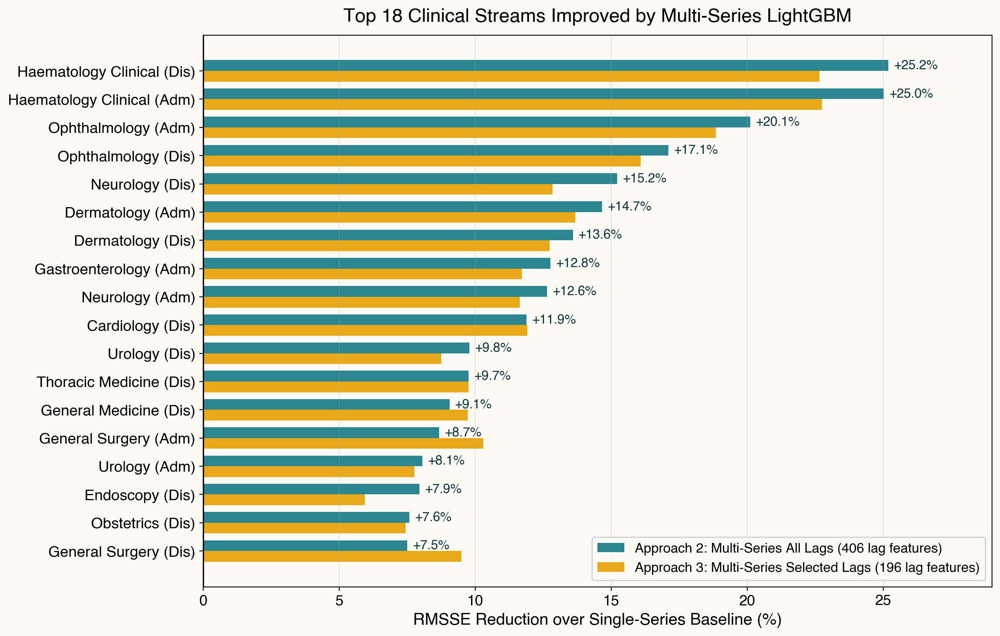
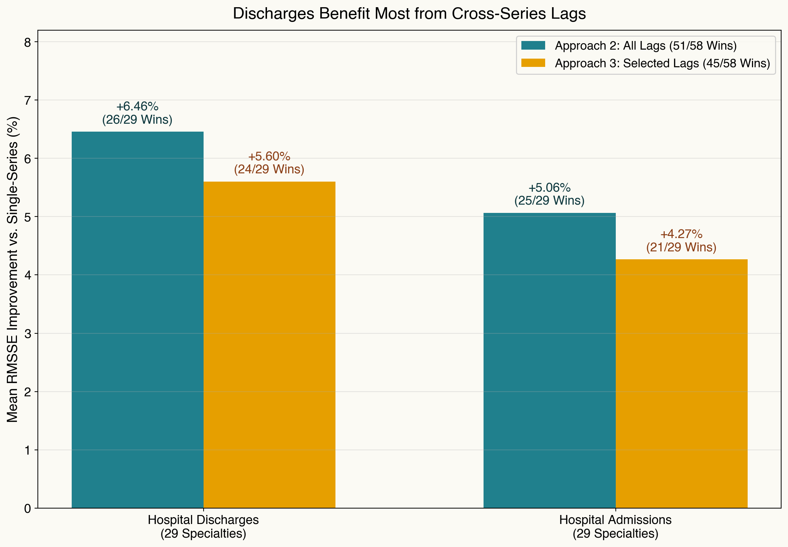
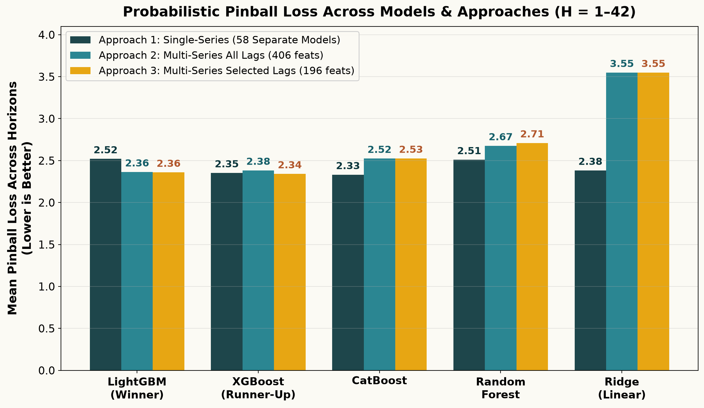
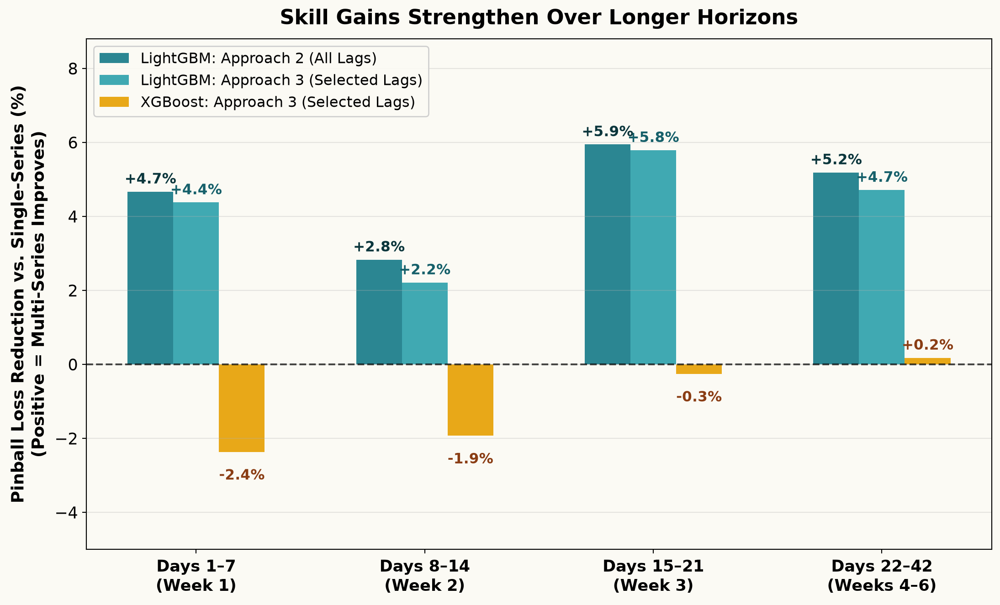
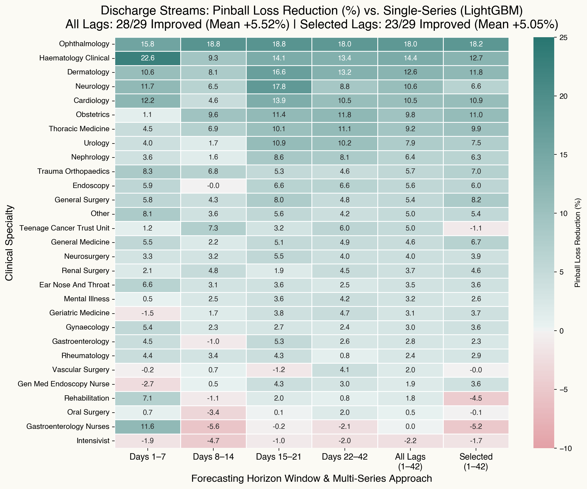
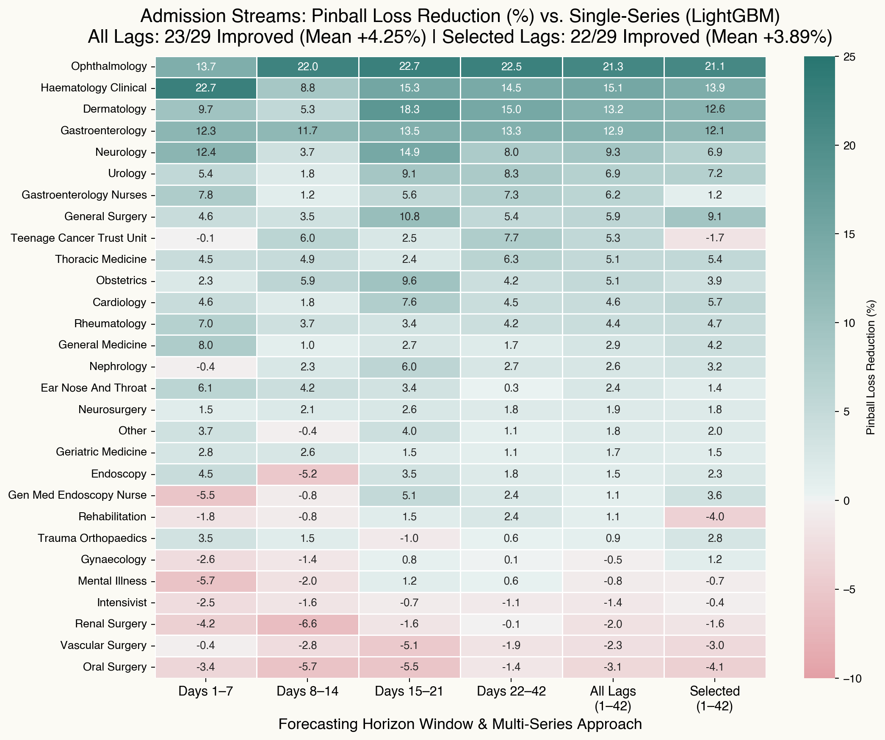

Outline
- Problem & Motivation
- Interdependent Multi-Series Forecasting Framework
- Experimental Setup & Three Forecasting Approaches
- Empirical Results: Point & Probabilistic Forecasting
- Operational Implications & Next Steps


Outline
Siloed Hospital Operations: Fragmented decision-making across multidisciplinary wards contributes to systemic delays, prolonged stays, and delayed discharges.
Systemic “Ripple Effects”: Admission surges in one clinical specialty act as leading indicators of downstream discharge pressure and bed blocking in others.
Patient Off-Placement: When target wards reach capacity, patients are boarded in non-specialist beds—inflating length of stay and compounding hospital gridlock.

29 Clinical Specialties General Medicine, Surgery, Trauma, Cardiology, Haematology, ICU, etc.
2 Flow Types Admissions & Discharges Strongly coupled daily inflows and outflows across wards
58 Series Simultaneous Time Series 5+ years of daily NHS inpatient data (\(>109,000\) panel observations)
Research Question:
Can exploiting interdependencies across specialties in ONE unified model improve forecasting accuracy over 58 independent models?
Independent Univariate Modeling
Why Siloed Forecasting Falls Short
Ignores Cross-Specialty Spillovers: Admissions and discharges are tightly coupled within and across specialties (\(r > 0.80\) in core medical/surgical wards). Univariate models are blind to upstream admission surges.
Data Fragmentation: Each model trains on only \(\sim 1,880\) daily observations rather than pooling shared seasonal and calendar structure across all \(109,000+\) hospital records.
Operational Maintenance Burden: Scaling and auditing 58 separate pipelines for point and probabilistic forecasting creates substantial technical debt.
➜ Proposed Solution: Jointly model all 58 streams via an Interdependent Multi-Series Forecasting Framework
Outline
Approach 1:
Single-Series Baseline
Approach 2:
Multi-Series (All Lags)
Approach 3:
Multi-Series (Selected Lags)
Global Functional Mapping:
Instead of 58 disconnected functions, a single model \(\mathcal{M}\) predicts patient flow \(y_{i,t}\) for any target stream \(i \in \{1, \dots, 58\}\): \[y_{i, t} = \mathcal{M}\left( s_i, \, \mathbf{X}_{t}^{\text{cross}}, \, \mathbf{Z}_{t} \right) + \epsilon_{i, t}, \qquad i = 1, \dots, N\]
Cross-Specialty Feature Representation (\(\mathbf{X}_{t}^{\text{cross}}\)):
Concatenates \(p=7\) autoregressive lags across the active set of series \(\mathcal{S}\) (\(\mathcal{S}_{\text{full}} = 58\) series in Approach 2; \(\mathcal{S}_{\text{sel}} = 28\) dominant specialty series in Approach 3): \[\mathbf{X}_{t}^{\text{cross}} = \Big[\mathbf{y}_{t-1:t-p}^{(k)}\Big]_{k \in \mathcal{S}} \in \mathbb{R}^{|\mathcal{S}| \cdot p}\]
Pooled Empirical Risk Minimization:
Learned jointly across all \(N=58\) streams and training days via peshbeen: \[\min_{\mathcal{M}} \sum_{i=1}^{N} \sum_{t=p+1}^{T} \mathcal{L}\left( y_{i, t}, \, \mathcal{M}\left(s_i, \, \mathbf{X}_{t}^{\text{cross}}, \, \mathbf{Z}_{t}\right) \right) + \Omega(\mathcal{M})\]
Notation & Model Interface (peshbeen):
id_col = "specialty")day_of_week, month), bank holidays, time trend, and capacity expansion (gm_ch)peshbeen (ml_multi_forecaster):
| Time | Series ID (id_col) |
Specialty A Lags | Specialty B Lags | Specialty C Lags | … | Exog | Target (Y) Flow |
||||||
|---|---|---|---|---|---|---|---|---|---|---|---|---|---|
| lag 3 | lag 2 | lag 1 | lag 3 | lag 2 | lag 1 | lag 3 | lag 2 | lag 1 | |||||
| t1 | Specialty A | 49 | 52 | 58 | 15 | 18 | 20 | 10 | 12 | 14 | … | exog1 | 65 |
| t2 | Specialty A | 52 | 58 | 65 | 18 | 20 | 22 | 12 | 14 | 16 | … | exog2 | 71 |
| t3 | Specialty A | 58 | 65 | 71 | 20 | 22 | 19 | 14 | 16 | 14 | … | exog3 | 68 |
| ↓ | id_col switches → |
← Cross-Lag Features (X) Repeat Identically Across Series → | Target switches ↓ | ||||||||||
| t1 | Specialty B | 49 | 52 | 58 | 15 | 18 | 20 | 10 | 12 | 14 | … | exog1 | 22 |
| t2 | Specialty B | 52 | 58 | 65 | 18 | 20 | 22 | 12 | 14 | 16 | … | exog2 | 19 |
| t3 | Specialty B | 58 | 65 | 71 | 20 | 22 | 19 | 14 | 16 | 14 | … | exog3 | 21 |
| ↓ | id_col switches → |
← Cross-Lag Features (X) Repeat Identically Across Series → | Target switches ↓ | ||||||||||
| t1 | Specialty C | 49 | 52 | 58 | 15 | 18 | 20 | 10 | 12 | 14 | … | exog1 | 16 |
| t2 | Specialty C | 52 | 58 | 65 | 18 | 20 | 22 | 12 | 14 | 16 | … | exog2 | 14 |
| t3 | Specialty C | 58 | 65 | 71 | 20 | 22 | 19 | 14 | 16 | 14 | … | exog3 | 15 |
| ⋮ | ⋮ (all 58 streams) | ⋮ (cross-lags repeated identically per date across streams) | ⋮ | ||||||||||
1. Step \(h = 1\) (Observed History)
Model ingests observed cross-series lags up to origin \(t\): \[ \mathbf{X}_{t} = \left[\mathbf{y}_{t:t-6}^{(k)},\, \mathbf{Z}_{t+1}\right]_{k \in \mathcal{S}} \]
Generates 1-step ahead predictions \(\hat{\mathbf{y}}_{t+1} = \mathcal{M}(\mathbf{X}_t)\) for all 58 series simultaneously.
2. Steps \(h = 2 \dots 42\)
3. Joint Probabilistic Scenarios
multi_prob_forecasts in peshbeen, empirical residual covariance is estimated across horizons.method="mvn") per fold, yielding full predictive distributions for every specialty and horizon \(h \in \{1, \dots, 42\}\).Outline
NHS Inpatient Dataset & Cross-Validation Design
gm_ch), plus Fourier terms & interactions for linear models.Five Model Families & Two Evaluation Metrics
Point Forecasting:
Root Mean Squared Scaled Error (RMSSE)
\[\text{RMSSE} = \sqrt{\frac{\frac{1}{H}\sum_{h=1}^{H}\left(y_{t+h} - \hat{y}_{t+h}\right)^2}{\frac{1}{T-1}\sum_{t=2}^{T}\left(y_t - y_{t-1}\right)^2}}\]
Probabilistic Forecasting:
Integrated Pinball Loss
\[L_\tau(y, \hat{q}_\tau) = \max\left(\tau(y - \hat{q}_\tau), \, (\tau - 1)(y - \hat{q}_\tau)\right)\] \[\overline{\text{PL}}(F, y) = 2 \int_0^1 L_\tau\left(y, F^{-1}(\tau)\right) d\tau\]
Outline







Outline
Implications for Healthcare Operations
Proactive Discharge Planning: Cross-specialty admission signals improve discharge forecasts in 26/29 (point) and 28/29 (probabilistic) specialties.
Streamlined MLOps: Replaces 58 isolated models with 1 unified peshbeen pipeline.
Methodological Caveats & Next Steps
Estimator Sensitivity: Multi-series gains might require learners with different characteristics, such as conditional tree splits and \(L_1\) regularisation (LightGBM), while linear (Ridge) and symmetric (CatBoost) models may underperform under high lag dimensionality.
From Forecasts to Bed Allocation Decisions:
ml_forecaster) and interdependent multi-series (ml_multi_forecaster, multi_prob_forecasts) workflows across any scikit-learn compatible estimator.